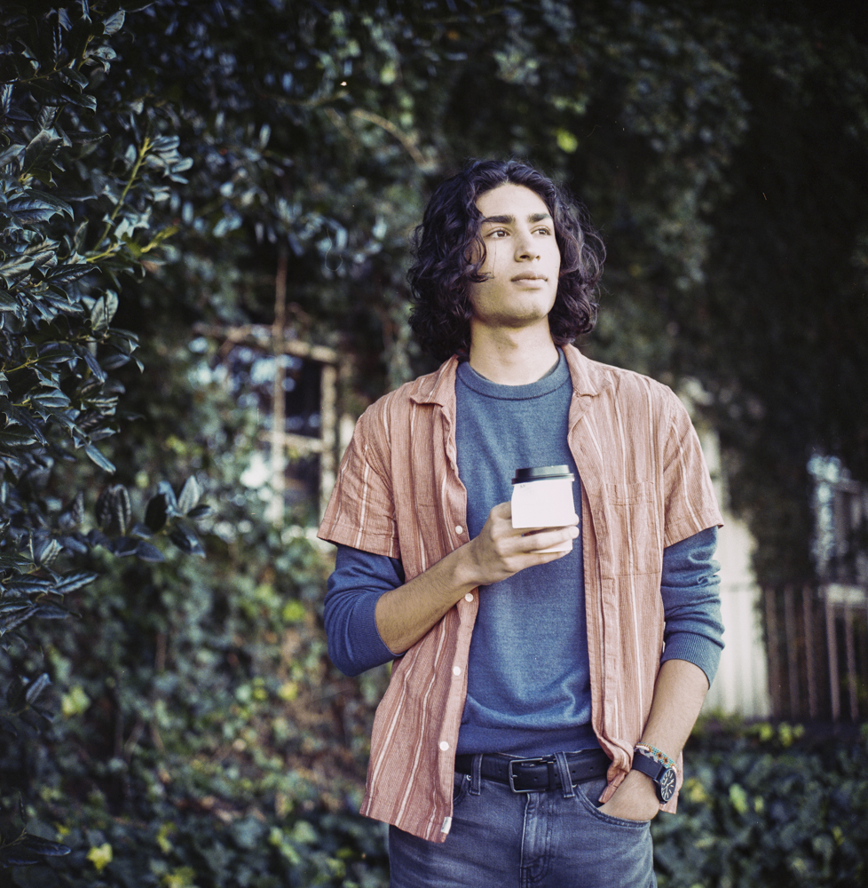
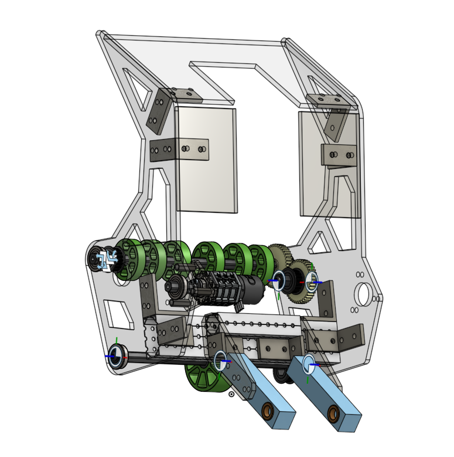
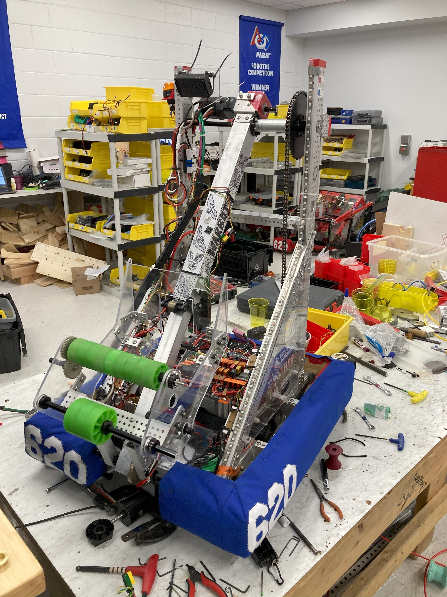
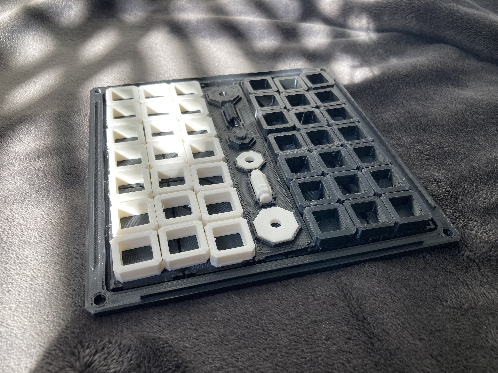

I go where my passions take me - especially if it means embracing new skills.

Engineering and art have always been constants for me. From designing simple interactive text adventures in Python in middle school or rapidly prototyping a robotic gripper in high school, the principles from both areas have influenced my every passion and undertaking.
As a student of engineering, turning ideas into tangible products is a fundamental skill. That's why I've developed my CAD abilities for use in:
clubs,


classes,
and personal projects.

But like all of my interests, 3D modelling began as a hobby: with Blender.
Engineering, however, is as much reliant on technical skills as it is with communication.
So, I developed my leadership skills in my high school FIRST Robotics club as the Electrical Subteam captain, and by leading the construction of multiple subsystems of the team's robot.
I initiated and ran the team's first social media account, captured high-quality photos and directed an outreach video to help recruit new members.
In ENES100 (Intro. to Engineering Design), I led a team of 8 students to design and prototype an autonomous robot that scanned the dimensions of a box, identified the red (broken) side, deposited a marker facing the side, and traversed around obstacles with a 100% success rate.
And now, I am refining my mentorship skills as a second-semester Teaching Fellow (UTF) for ENES100, where I collaborate with an instructor to teach engineering design principles, to facilitate a positive and collaborative environment, and to cultivate passion and leadership in students.
Music has provided both inspiration and a form of expression throughout my life. I grew up learning classical piano, but found myself drawn towards improvisation and, eventually, composition. I released my first EP "Overture" in early 2021, and my more refined and developed EP "The Ferry" in mid-2023.
I use Ableton Live 10 for production.
Devil's Draw (1st place UMD Game Jam Spring 2025): A timed card game against the Devil that utilizes dying as a mechanic to increase the time limit and chain attacks.
Role: Programmer, Co-Designer
TRACEROUTER (1st place UMD Game Jam Fall 2025): A fast, momentum-paced 3D parkour game set in a digital world being corrupted by a virus.
Role: Programmer, Composer
For the past 4 years, I have combined my skills in programming, digital art, and music to develop video games. It all began when I played Zork for the first time—A text-based adventure game from the late 70s. I picked up Python and attempted (with not much success) to construct my own framework for text adventures, eager to make my own living, interactive worlds.
In the summer of 2022, I took a stab at real game development. I learned Unreal Engine, moved to Unity, and eventually settled on Godot—A free, open-source game engine. I started and left more projects than I could count, until I joined the UMD Game Developers Club and competed in the semester-long game jams. There, the games I made with my teams won the overall competition in both Spring and Fall 2025 semesters.
Did you know that this website was created and hosted online 100% for free?
Web development was one of my first coding outlets, and it still serves a practical purpose when I need a website like this. Using HTML, CSS and Javascript, as well as GitHub Pages for hosting, there was no need for a website builder. I can even still get those fancy parallax and blurring animations too!
Haroon Amanullah
haroon.a.amanullah@gmail.com
Hi! I'm Haroon, a MechE student at the University of Maryland with a few too many creative outlets. Thanks for checking out my site :)